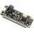
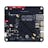
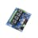
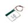
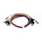

Things used in this project
Hardware components |
|
|  | Blues Swan |
|  | Blues Notecarrier A |

|
Blues Notecard (Cellular) |
| INA219 Power Supply Monitoring Module | |
|  | ControlEverything.com 4-CHANNEL RELAY CONTROLLER FOR I2C |
|  | Seeed Studio Polymer Lithium Ion Battery - 2200mAh 3.7V |
Software apps and online services |
|

|
Blues Notehub.io |
| Datacake | |

|
Twilio SMS Messaging API |
Hand tools and fabrication machines |
|

|
3D Printer (generic) |
|  | Jumper Wire, Bundle |

|
Soldering iron (generic) |
Story
Story
Mobility-impaired individuals often face challenges in managing and monitoring household electrical devices. Manually checking device statuses or electricity consumption can be inconvenient or impractical. This project aims to alleviate these challenges by developing a smart power monitoring system that provides real-time insights into electricity load and device status, accessible remotely.
Build2gether2.0 Challenge
The inspiration for this project originated from the Build2gether2.0 Inclusive Innovation Challenge, which invites participants to develop "innovative solutions to help individuals with disabilities overcome their daily struggles."
Among the various themes, I was particularly drawn to the challenge of assisting mobility-impaired individuals. My background in developing assistive technologies, combined with a passion for enhancing accessibility, motivated me to address the difficulties faced by individuals who struggle with daily tasks due to limited mobility. Managing electrical devices and tracking energy consumption can be especially challenging for people with mobility impairments, as it often requires physical interaction with switches and power outlets.
Problem Identification
The problem identified revolves around the significant challenge individuals with mobility impairments face in interacting with and controlling home appliances, which fundamentally impacts their ability to live independently and comfortably in their own homes without the help of others. In this problem, mobility-impaired people always need a person to be with to help them, this creates a dependency on others, and the availability of people at all times is not possible. It makes it difficult for impaired people to just turn the television ON or other devices like Light Bulbs in the home. Not everyone can afford automatically mechanically geared movable wheelchairs due to their cost. So my solution HomeEase provides a feasible option for Indoor mobility problems and provides an improved condition.
What were the needs or pain points that you attended to and identified when you were solving problems faced by the Contest Masters?
- Physical Barriers: The standard design of many appliances requires manual interaction—buttons need to be pushed, knobs turned, and sometimes appliances are placed in locations that are difficult to reach for someone in a wheelchair or with limited range of motion. Causing Difficulty in accessing the tools and appliances without the help of others.
- Safety Concerns: Safety becomes a significant concern when individuals with mobility impairments interact with home appliances. The risk of injury from trying to operate an appliance that is not designed for accessibility, or from leaving an appliance running unattended because it was not shut off properly, can lead to potentially dangerous situations.
- Energy Inefficiency and Economic Strain: Without the ability to easily monitor and control their appliances, individuals with mobility impairments might face higher energy consumption, which not only impacts the environment but also leads to higher utility bills. This economic strain is particularly concerning given that individuals with disabilities may already face additional financial burdens .
With These concerning issues, my solution can provide improved, affordable conditions for mobility-impaired people for indoor accessibility.
Developing a Solution
The system is built using components such as the Blues Swan microcontroller, Blues Notecarrier A for connectivity, a Blues WiFi Notecard, and a voltage sensor to gather data from load devices. These components work together to monitor power usage and device functionality. Data is transmitted to Blues Notehub and visualized through Datacake, providing users with remote access to real-time information about their devices. Furthermore, the system is integrated with Twilio to send alerts and notifications about abnormal power usage or device status, helping users stay informed and take action if necessary.
Key features of the project include:
- Real-Time Power Monitoring : The system provides real-time tracking of electricity consumption from connected devices, enabling users to monitor their power usage remotely
- Remote Device Status Tracking : Users can check the status of their electrical devices, ensuring they are operating as intended without needing physical access to switches or outlets.
- Seamless Cloud Integration : The system uses Blues Notehub for seamless data transmission and Datacake for visualizing the data in an accessible dashboard. This allows users to access device information from anywhere.
- Alert and Notification System : With Twilio integration, users receive SMS notifications about unusual power usage, device malfunctions, or system status updates, providing timely alerts to prevent potential issues.
How It Works
The Blues Swan microcontroller plays a crucial role in managing the data flow from the voltage sensor to the cloud. The voltage sensor continuously captures electrical readings from the connected devices and sends this data to the Blues Swan. This microcontroller processes the incoming data, performing necessary calculations and formatting it for transmission. The processed data is then relayed through the Notecarrier A, which acts as an intermediary, facilitating communication between the microcontroller and the WiFi Notecard. The WiFi Notecard establishes a secure internet connection, allowing the data to be sent to Blues Notehub. From there, the information is routed to Datacake for visualization. This inbound communication process ensures that real-time power consumption data is accurately captured, processed, and made available on the cloud-based dashboard for user access and monitoring.
The voltage sensor is positioned to measure the voltage across each device, converting this information into data that reflects power consumption. This data is then transmitted to the Blues Swan microcontroller, which handles the initial processing and prepares the data for transmission. The Notecarrier A facilitates the connection between the microcontroller and the WiFi Notecard, enabling the system to connect to the internet.
Once connected, the WiFi Notecard sends the power consumption data to Blues Notehub, a cloud platform designed for secure data routing and management. The data is uploaded in real time and processed by Datacake, where it is displayed on an intuitive dashboard. Users can access this dashboard from any location to view current power usage statistics, device status, and historical data trends. The system is also configured to use Twilio for alerting purposes; it sends SMS notifications when power usage deviates from predefined thresholds or when a device exhibits unusual behavior, ensuring users are promptly informed of any potential issues.
Blues Notehub
Blues Notehub is a cloud service designed for IoT applications that provides secure, scalable, and reliable data routing. It acts as a bridge between the physical hardware and the cloud-based data visualization tools. In this system, Notehub receives the data transmitted from the WiFi Notecard, processes it, and routes it to Datacake for visualization. It also handles device management and can be used for configuring and managing multiple IoT devices.
Datacake
Datacake is a cloud-based data visualization and management platform. It provides an intuitive dashboard where users can view and analyze the data collected from their devices. In this system, Datacake receives processed power consumption data from Blues Notehub and presents it in a user-friendly format. This includes real-time graphs, historical data trends, and actionable insights into power usage and device status.
Twilio
Twilio is a cloud communications platform that enables sending and receiving SMS messages and making voice calls. In this project, Twilio is used to provide alert and notification services. It sends SMS alerts to users when there are significant deviations in power consumption or when a device malfunctions. This ensures that users are promptly informed of any issues that may require their attention, improving responsiveness and device management.
Project Files
Complete project code and 3D print files are found within this project's attachments and on GitHub.
Future Development
Key areas for future development include:
- Advanced Analytics and Machine Learning : Integrating machine learning algorithms could enable predictive analytics, allowing the system to anticipate potential issues before they occur. For instance, predictive models could analyze historical power usage data to identify patterns and predict equipment failures or unusual consumption spikes.
- Integration with Smart Home Ecosystems : Expanding compatibility with popular smart home ecosystems such as Google Home, Amazon Alexa, or Apple HomeKit could enable voice control and automation. Users could then manage their devices and monitor power usage through voice commands or automated routines based on predefined conditions.
- Enhanced User Interface : Future updates could include a more advanced user interface on Datacake, featuring customizable dashboards, detailed energy usage reports, and more interactive visualizations. Enhanced mobile app integration could also provide users with more control and insights on the go.
- IoT Device Integration : Adding support for a wider range of IoT devices and sensors could enhance the system’s versatility. For example, integrating temperature sensors, humidity sensors, or motion detectors could provide more comprehensive monitoring of the home environment.
- Energy Efficiency Recommendations : The system could be developed to offer actionable recommendations for improving energy efficiency based on usage patterns. It could suggest ways to reduce energy consumption and lower utility bills, contributing to both cost savings and environmental benefits.
Conclusion:
The smart power monitoring system enhances independence for mobility-impaired individuals by providing real-time tracking and management of electrical devices through a seamless integration of components like Blues Swan, Notecarrier A, WiFi Notecard, and voltage sensors. By leveraging cloud platforms such as Blues Notehub and Datacake for data visualization and Twilio for alerts, the system enables users to monitor power usage and receive timely notifications remotely. This practical solution not only simplifies device management but also opens doors for future improvements, including advanced analytics and smart home integration, further enhancing its effectiveness and accessibility.
Thank You Note:
I would like to extend our heartfelt gratitude to Blues io and Build2Gether2.0 for their generous sponsorship and support throughout this project.